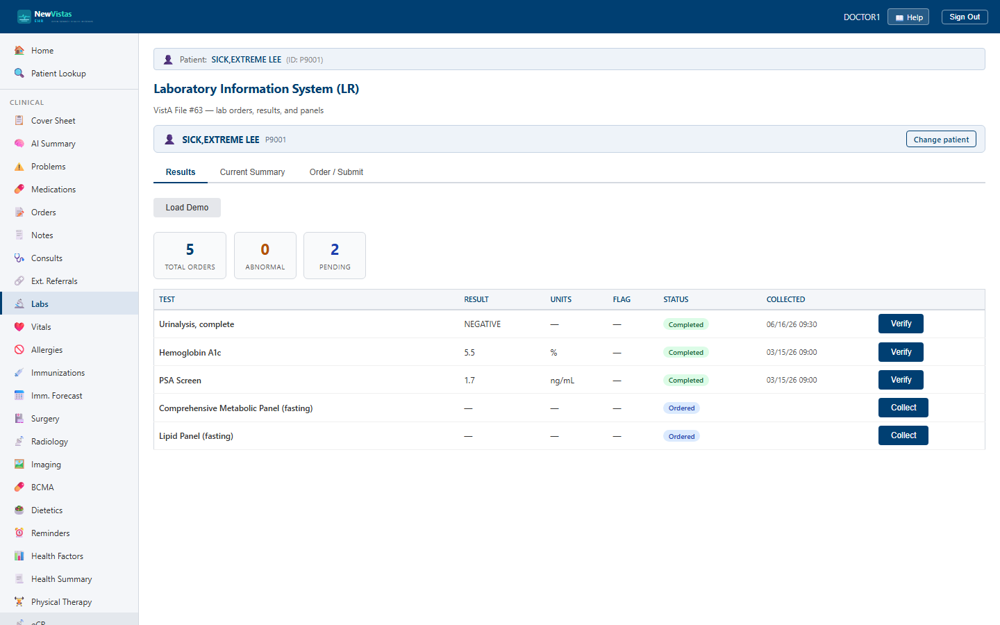

Labs
The Laboratory Information System (LR) screen is where you review lab results, see the current summary with trends, and order new tests. It maps to VistA File #63 and is the equivalent of the CPRS Labs tab.
Open Labs
- In the sidebar, click Labs (or go to
/labs). - If a patient is already in context, their results load automatically. Otherwise, in the patient bar type the patient ID (e.g.
P9001) and load the patient.

What you see
The three tabs
- Results — every lab order with its result, units, abnormal flag, and status.
- Current Summary — the latest value per test, with reference range and a last-3 trend.
- Order / Submit — place a new lab order or ingest a result directly.
Results tab
Summary cards count Total Orders, Abnormal, and Pending. The table below lists each test; abnormal values appear in red, and rows carry the action that fits the test's status:
- Collect — record specimen collection for an Ordered test.
- Enter Result — record a value, units, reference range, and abnormal flag for a Collected test.
- Verify — verify a Completed result by selecting the verifying provider.
Current Summary tab
Shows the most recent value per test with LOINC, reference range, flag, and a small trend of the last three values. Any abnormal results are also called out in a banner at the top.
Order / Submit tab
The Order New Lab Test form has a Quick pick of common tests (CBC, BMP, Lipid Panel, A1c, and more) that fills the test name, LOINC, category, and specimen for you; confirm the ordering provider and click Place Order. A separate Ingest Result form lets you submit a completed result directly — for example from an HL7 feed or external lab.